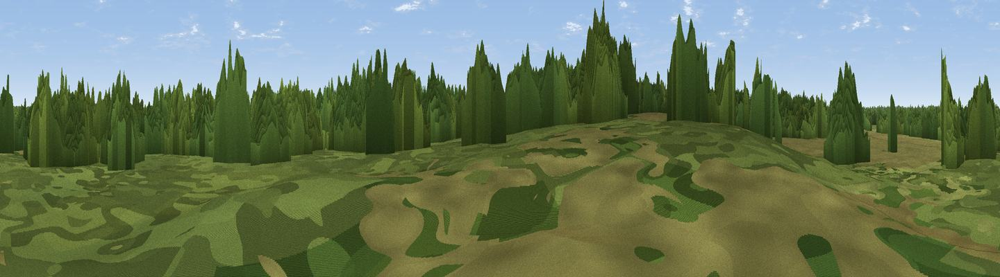

Hut Hill
#45513 in England · top 70% of its area beats it · near RushfordThe view, rendered

A 360° render of this exact spot computed from the terrain model, tree cover and land cover — summer colours, afternoon light, calibrated against photographs of famous viewpoints. Real trees, hedges and buildings will differ in detail.
The panorama
Grey silhouette: terrain skyline in each direction (720 bearings, Earth curvature and refraction included). Dashed green: skyline with trees (+15 m) and buildings (+8 m) as obstacles. Blue strip: how far the ground is visible on each bearing.
Where the view opens
Wedge length = distance to the farthest visible ground on that bearing (vegetation-aware). Rings at 10, 25 and 50 km.
What fills the view
56% woodland · 29% grassland · 14% cropland
Angular shares of the visible panorama (visual magnitude), not map area. Landscape diversity 0.43 (0–1 Shannon).
Key numbers
More beautiful places nearby
The staircase of upgrades: each row has a higher view potential than everything closer. Driving times are estimates from straight-line distance, calibrated against real road routing — check an actual route before setting out.
| Place | Direction | Drive | Score |
|---|---|---|---|
| Castle Hill | WNW · 8 km | ~17 min | 22.6 |
| Ringmere Lookout | NNW · 9 km | ~18 min | 23.1 |
| Washland Viewpoint | WNW · 24 km | ~40 min | 26.6 |
| New Fen viewpoint | WNW · 25 km | ~41 min | 27.4 |
| Joist Fen viewpoint | WNW · 26 km | ~42 min | 29.5 |
| Dunham Lodge | N · 33 km | ~51 min | 30.2 |
| Viewpoint near Great Blakenham | SSE · 34 km | ~52 min | 39.5 |
| Viewpoint near Middleton | NW · 44 km | ~65 min | 56.5 |
52.38534, 0.87069 · source: osm peak · position refined by local search. Computed location — check access rights before visiting.